CATEDRAL SAN SEBASTIAN DE ANGANOY
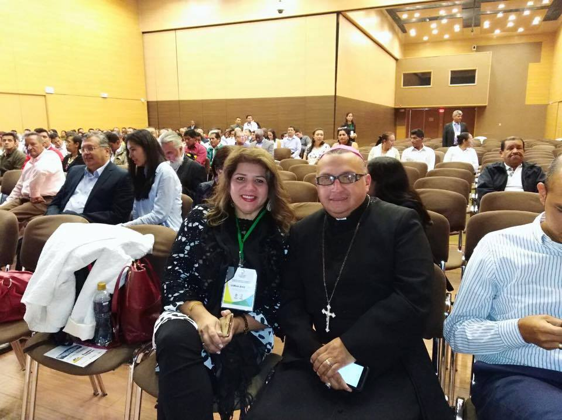Así comenzó un sueño y hoy es realidad, gracias a la constancia, Esfuerzo, confianza… pero ante todo gracias a la Comunidad de el Barrio Anganoy y de toda las demás comunidades, que confía en nosotros…
En esta Comunidad comenzamos una vez a la semana los estudios bíblicos con una buena participación.
Hicimos visita a los hogares para bendecirlos y acompañarlos en sus dificultades.
Celebramos las novenas de Aguinaldo con la participación de 84 niños del barrio.
RENCONOCIMIENTOS DIOCESANOS
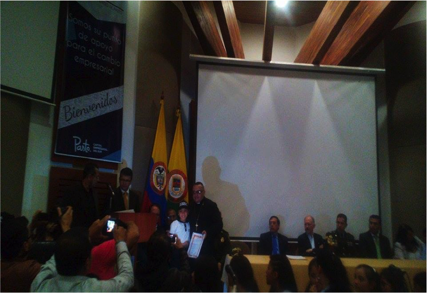
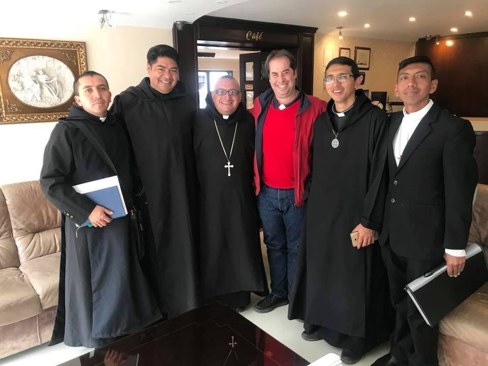
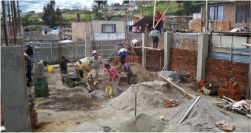
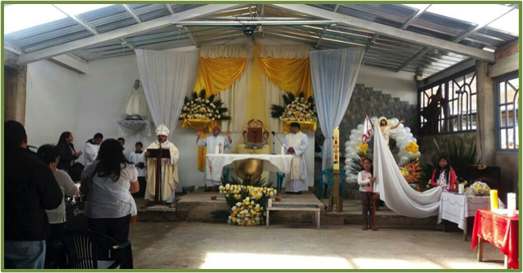
Nuestra Espiritualidad Benedictina nos invita a vivir La Sanación personal, para llevarla a los demás. «Ora et labora»… Orar y trabajar para San Benito Abad; es llevar el culmen de nuestra Regla de vida al servicio a los demás… Un Cristo pobre a los mas pobres…
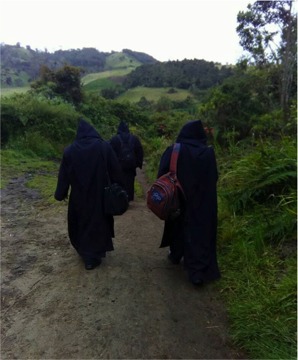
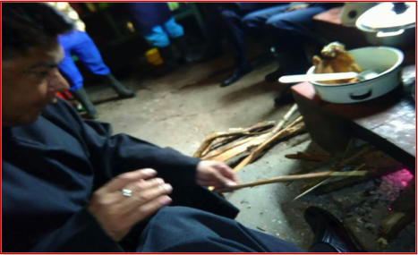
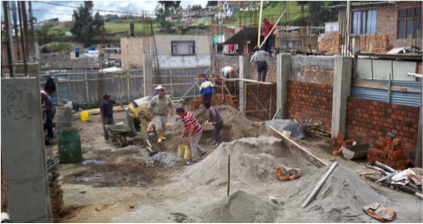
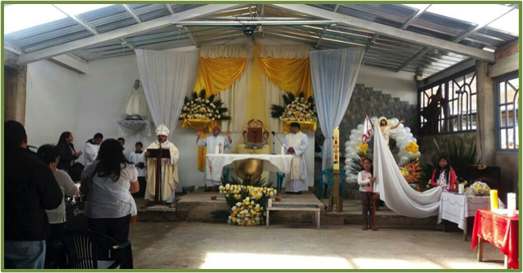
ESPIRITUALIDAD BENEDICTINA.
Nuestra Espiritualidad Benedictina nos invita a vivir La Sanación personal, para llevarla a los demás. «Ora et labora»… Orar y trabajar para San Benito Abad; es llevar el culmen de nuestra Regla de vida al servicio a los demás… Un Cristo pobre a los mas pobres…
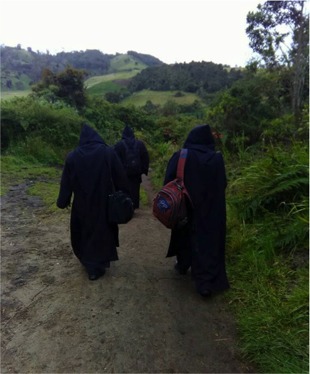
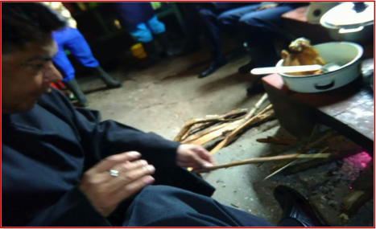